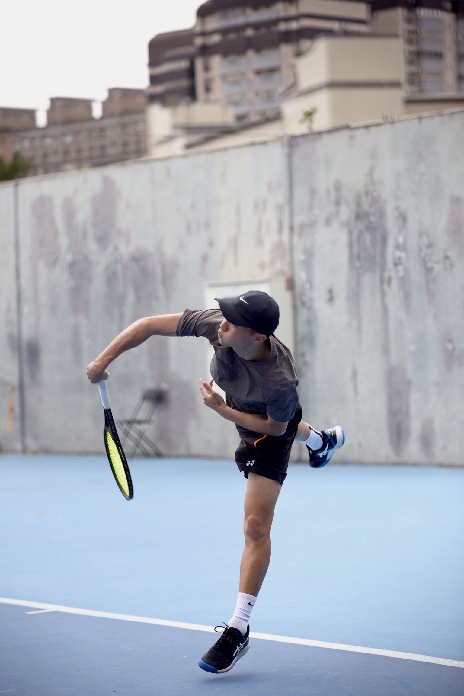

專業教學團隊
由擁有 10 多年網球經驗的選手與教練帶領，從技術、體能到心理層面，提供更完整的訓練支持。
JOIN CHIAYI TENNIS
適合初學者、成人、兒童，從基礎到進階都能循序練習。
民雄・中正大學附近・嘉義市・嘉義縣
ABOUT JOIN
來抵嘉打球！
在這邊你可以學習到專業並且正確的網球知識與觀念，結合教練們當選手的多年的經驗，用簡單好懂的方式讓大家學習，不怕問倒教練，只怕你不來!
專業網球知識
正確動作觀念
適合初學到進階

BRAND
經由具備網球選手背景的教練帶領，JOIN 嘉義網球希望提供高品質、 有效率且更貼近學員需求的訓練方式。我們期望讓嘉義地區的網球學習環境越來越好， 不論是大人或小孩，都能在這裡培養運動習慣，也真正學會一項屬於自己的技能。
要找就找最好的
學習網球不走彎路
別讓自己後悔太晚才來！
CORE
由擁有 10 多年網球經驗的選手與教練帶領，從技術、體能到心理層面，提供更完整的訓練支持。
依照學員目前能力與目標方向，規劃不同的課表與訓練重點，幫助學員穩住節奏、持續進步。
除了上課之外，教練也會協助學員與其他球友建立連結，讓你在課後也有機會找到一起練習與切磋的夥伴。
教練會透過不同的比喻與輔助教材，例如水瓶、水管、彈力帶等，幫助學員更容易理解動作與身體發力概念。
來打網球不只是運動而已，而是一步一步培養出一項真正屬於自己的技能。
ACHIEVEMENTS